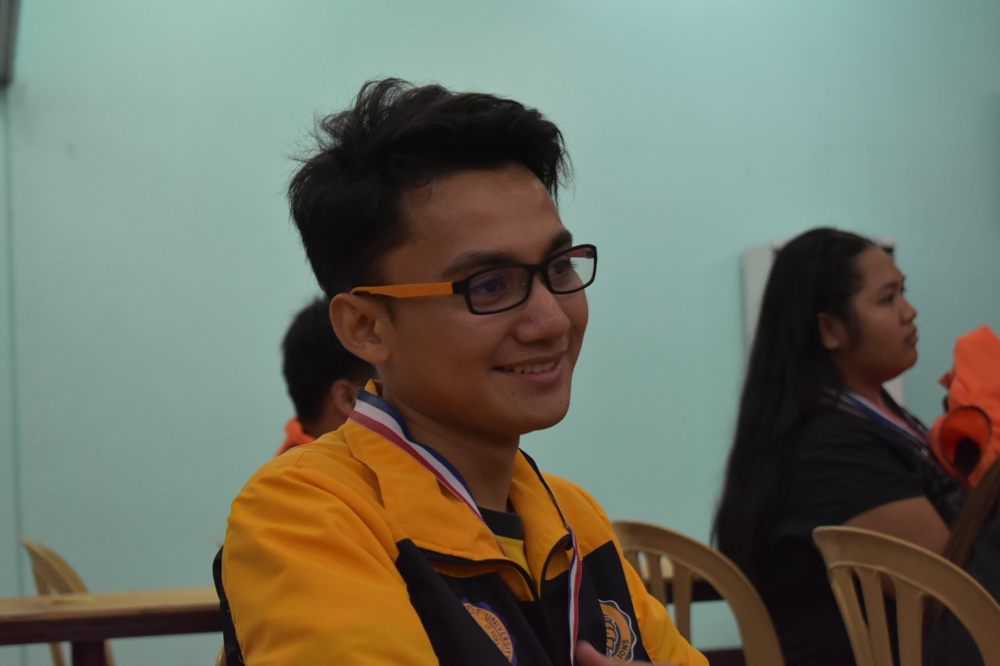

Friends
A friend is one who overlooks your broken fence and admires the flowers in your garden.
Learn moreME, MYSELF, AND I
 Welcome to my World of 64 squares, hardbound books, buggy laptops, and neural networks. My name is Lanz Vincent T. Vencer and I am currently taking up Bachelor of Science in Computer Science at Lyceum of the Philippines University - Manila. Currently, I live here in Iloilo City due to the pandemic forcing me to go home. I'm also an athlete under the LPU Chess team who will be representing the Seniors Category in the upcoming NCAA Season 97.
I have been playing chess for a decade already and I've competed in various tournaments like Batang Pinoy, Milo Olympics, National Age Group,
Palarong Pambansa, NCAA, etc. I guess you could say that my whole childhood revolved around the game. Aside from chess, I'm also fascinated about
computers. My fondest hope is that I could become an Artificial Intelligence(AI) engineer someday and I could create algorithms that could change
the world. During my free time, I read books, practice programming, and of course play chess. Although lately I kind of slacked off a little due
to my difficulties in balancing it with academics. My biggest ego-enhancing accomplishment in my academic venture is probably being able to create my first neural
network algorithm. I don't want to bore you about the technicalities but it feels great that somehow, even if the road is unclear, I'm making little progress towards
my biggest goal.
Welcome to my World of 64 squares, hardbound books, buggy laptops, and neural networks. My name is Lanz Vincent T. Vencer and I am currently taking up Bachelor of Science in Computer Science at Lyceum of the Philippines University - Manila. Currently, I live here in Iloilo City due to the pandemic forcing me to go home. I'm also an athlete under the LPU Chess team who will be representing the Seniors Category in the upcoming NCAA Season 97.
I have been playing chess for a decade already and I've competed in various tournaments like Batang Pinoy, Milo Olympics, National Age Group,
Palarong Pambansa, NCAA, etc. I guess you could say that my whole childhood revolved around the game. Aside from chess, I'm also fascinated about
computers. My fondest hope is that I could become an Artificial Intelligence(AI) engineer someday and I could create algorithms that could change
the world. During my free time, I read books, practice programming, and of course play chess. Although lately I kind of slacked off a little due
to my difficulties in balancing it with academics. My biggest ego-enhancing accomplishment in my academic venture is probably being able to create my first neural
network algorithm. I don't want to bore you about the technicalities but it feels great that somehow, even if the road is unclear, I'm making little progress towards
my biggest goal.
The first-impression people always attribute to me is someone who is always serious, dull, or in other cases listless. I don't really blame them and I could see how it makes sense; I push wooden pieces as a hobby, I read boring biographies of other people instead of living my own, I sit in front of the computer for hours, and I hardly participate in any social gatherings. I find the typical "college life" unappealing, but maybe it's just a lifestyle I could not afford. Taking up computer science was probably the only silver lining I could deduce for my college days aside from being a chess athlete. To see things clearer and have a vision is probably the biggest characteristic I would wish to garner from my remaining days as a student. Although the angst of post-college life have always baffled me, I believe that all we be well as long as I strive to improve myself everyday. This might sound too optimistic (or could also be a mindless blabber) but this is how I see my life today and tomorrow onwards.
A box of pizza and a full pitcher of Iced Tea! I'm trying to live with the "programmer" stereotype where the workspace is messy and full of paper stripes. Although I might have been slightly tidy compared to how movies portray programmers, I could still myself living the lifestyle. I love programming so much to the point where my mom complains that I don't go out anymore. Although I admit, Web development is the least of my favorite in all of the subsets of programming. I actually dread this project but I guess it's still a good oportunity to learn. I don't really have anything to type anymore, the class consists of almost 30 students and you probably won't read all of this hehe.
We can't be or need to be anything else but ourselves
A friend is one who overlooks your broken fence and admires the flowers in your garden.
Learn more
Ready, 1-2-3, smile!!!
Learn more